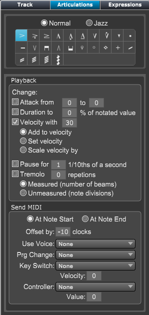

Track Inspector Panel - Articulations
Track Inspector Panel - Articulations
If the Articulations panel is not showing click on the Inspector button at top right of Control Bar or type "Shift-I" to open the panel. Then choose Articulations
The Articulations panel contains settings for the playback of articulations on the current track.
 |
Articulation Type - Choose the articulation to edit
Playback Change the general playback of the articulation. Send MIDI Set what MIDI information is sent when note is played. |